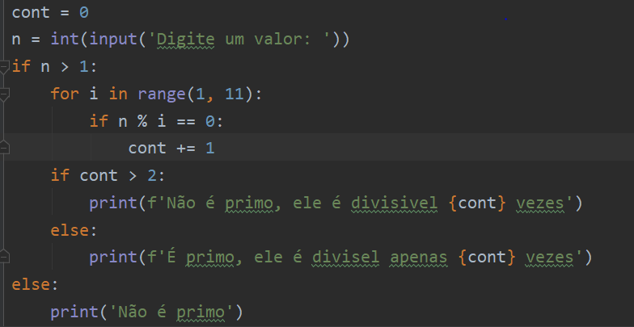

Phyton (1991)
Python é uma linguagem de programação interpretada, de alto nível e de propósito geral. Foi criada por Guido van Rossum e lançada pela primeira vez em 1991. Conhecida por sua simplicidade e facilidade de uso, o que a torna uma ótima opção para iniciantes em programação.

Uma das principais características do Python é sua sintaxe clara e legível, que torna o código fácil de ser lido e compreendido. É uma linguagem versátil, permitindo o desenvolvimento de uma ampla variedade de aplicativos, desde pequenos scripts até grandes sistemas distribuídos. Ela suporta múltiplos paradigmas de programação, incluindo programação orientada a objetos, programação imperativa e programação funcional.
Atividade desenvolvida como extensão no projeto
PACEX/Mundo Tech do curso de análise e Desenvolvimento de Sistemas
Unipar - Cascavel